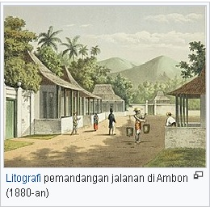
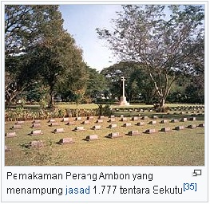
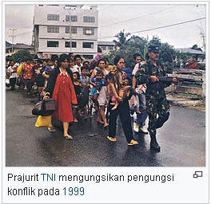

Sejarah
Asal-usul Nama Ambon
 Asal-usul dari istilah Ambon tidak mudah ditentukan. Menurut keterangan yang diberikan penduduk setempat,
istilah tersebut berasal dari kata ombong yang merupakan bentukan lokal dari kata embun. Puncak-puncak
gunung di Pulau Ambon memang sering tertutupi oleh embun yang tebal. Istilah Laha pun pernah dipakai untuk
menamai Benteng Nossa Senhora da Anunciada yang menjadi cikal bakal kota. Dalam bahasa setempat, laha
diartikan sebagai pelabuhan.
Asal-usul dari istilah Ambon tidak mudah ditentukan. Menurut keterangan yang diberikan penduduk setempat,
istilah tersebut berasal dari kata ombong yang merupakan bentukan lokal dari kata embun. Puncak-puncak
gunung di Pulau Ambon memang sering tertutupi oleh embun yang tebal. Istilah Laha pun pernah dipakai untuk
menamai Benteng Nossa Senhora da Anunciada yang menjadi cikal bakal kota. Dalam bahasa setempat, laha
diartikan sebagai pelabuhan.
Meskipun kini istilah Ambon mengacu pada Kota Ambon, Pulau Ambon, maupun suku Ambon, dalam perkembangan sejarah
(terutama pada abad ke-20), istilah Ambon mengacu kepada penduduk Maluku Tengah. Frasa orang Ambon (Ambonezen)
sendiri pun mengacu kepada para penduduk di Maluku Tengah, meskipun pada awalnya hanya digunakan untuk penduduk
Kota Ambon yang memiliki budaya mestizo.
Benteng Victoria
 Kota Ambon mulai berkembang semenjak kedatangan Portugis pada tahun 1513. Kemudian, sekitar tahun 1575,
penguasa Portugis mengerahkan penduduk di sekitarnya untuk membangun Benteng Kota Laha atau Ferangi yang pada
waktu itu diberi nama Nossa Senhora da Anunciada di Dataran Honipopu. Dalam pembangunan, masyarakat pekerja
mendirikan organisasi berbentuk perkampungan seperti Soya yang menjadi dasar Kota Ambon karena di dalam
perkembangan selanjutnya masyarakat tersebut sudah menjadi masyarakat geneologis teritorial yang teratur.
Kota Ambon mulai berkembang semenjak kedatangan Portugis pada tahun 1513. Kemudian, sekitar tahun 1575,
penguasa Portugis mengerahkan penduduk di sekitarnya untuk membangun Benteng Kota Laha atau Ferangi yang pada
waktu itu diberi nama Nossa Senhora da Anunciada di Dataran Honipopu. Dalam pembangunan, masyarakat pekerja
mendirikan organisasi berbentuk perkampungan seperti Soya yang menjadi dasar Kota Ambon karena di dalam
perkembangan selanjutnya masyarakat tersebut sudah menjadi masyarakat geneologis teritorial yang teratur.
Setelah Belanda berhasil menguasai Kepulauan Maluku dan khususnya Ambon dari kekuasaan Portugis, benteng Nossa
Senhora de Anunciada direbut pada tahun 1605 dan dijadikan pusat pemerintahan kolonial dan diberi nama Victoria.
Benteng ini dilanda gempa hebat dan rusak parah, lalu direnovasi dan diberi nama ulang Nieuw Victoria. Meskipun
nama barunya Nieuw Victoria, benteng ini lebih dikenal rakyat setempat sebagai Benteng Victoria. Benteng ini
terkenal sebagai tempat Pattimura digantung pada 16 Desember 1817. Pahlawan Nasional Slamet Rijadi juga gugur di
benteng ini dalam pertempuran melawan pasukan Republik Maluku Selatan.
Masa Penjajahan Belanda

Pulau Ambon ditaklukan oleh Kongsi Dagang Hindia Timur Belanda (VOC) pada 23 Februari 1605 dengan bantuan
kekuatan tempur dari Ternate, Luhu, Hitu, Jawa, dan Gowa. Pada awal masa VOC, terjadi beberapa pergantian
gubernur. Gubernur otoriter yang terkenal adalah Adrian Martensz Block yang melakukan kerja paksa perluasan
Benteng Victoria. Selain itu, ada pula Gubernur Herman van Speult yang menyengsarakan rakyat dengan
perubahan monopoli perdagangan rempah-rempahnya. Pembantaian pun pernah dilakukan pada masa ini.
Pada 17 Februari 1796 VOC menyerah kepada laksamana Britania Raya, Pieter Ramier sehingga Kota Ambon menjadi
bagian dari wilayah Britania Raya. Britania Raya memerintah di kota sampai tahun 1803. Setelah itu,
terjadilah penyerahan jajahan kembali bukan kepada VOC, melainkan kepada Belanda karena VOC jatuh bangkrut
pada 1799, sebelum Kota Ambon dikembalikan.
Pada masa Hindia Belanda, Kota Ambon mulai dimodernisasi. Kota Ambon, tepatnya Casteel Victoria menjadi ibu kota
dari Gouvernment Amboina, salah satu dari tiga gouvernment yang terletak di antara Sulawesi dan Irian yang
membentuk administrasi pemerintahan yang bernama Gouvernment der Molukken yang dibentuk pada 1817. Selain
itu, pada tanggal 7 September 1921 masyarakat Kota Ambon diberi hak yang sama dengan pemerintah kolonial.
Hal ini menjadi wujud perjuangan masyarakat Indonesia dari Maluku. Hal ini pun merupakan kekalahan politik
penjajah karena warga Ambon pun menjadi bisa berperan dalam pemerintahan dengan irama yang sama sengan politik
penjajah masa itu. Dengan demikian, masyarakat kota terbekali modal dalam menentukan masa depannya.
Masa pendudukan Jepang

Tentara Jepang mendarat di Indonesia melalui Ambon pada 1 Februari 1942 dari Kendari. Meskipun dahulu
senasib sebagai budak VOC dan Belanda, Jepang berhasil menaklukan Belanda dan sekutunya dalam Pertempuran Ambon
untuk merebut Kota Ambon yang merupakan markas angkatan laut. Dalam pendudukan dan penjajahan Jepang, Ambon
digunakan sebagai pangkalan udara utama. Selain itu, warga Ambon mengalami kemiskinan dan kelaparan sebagai
dampak dari perang.
Peninggalan masa pendudukan ini masih bisa ditemukan. Pemakaman Perang Ambonlah yang paling terkenal sebagai
pemakaman tentara-tentara Sekutu yang gugur dalam Pertempuran Ambon. Selain itu, Gubernur Maluku, Said Assagaf,
pernah menemukan dua torpedo peninggalan Jepang di dasar Teluk Ambon ketika menyelam.
Masa Kemerdekaan Indonesia dan Hari Jadi
 Hari lahir atau hari jadi kota Ambon telah diputuskan jatuh pada tanggal 7 September 1575 dalam suatu seminar di
Ambon yang berlangsung pada 14–17 November 1972 dengan kerja sama bersama Universitas Pattimura. Penggagas
seminar ini adalah Wali Kota Ambon ke-9, Letkol Matheos H. Manuputty melalui SK 25/KPTS/1972 tentang Pembentukan
Panitia Khusus Sejarah Kota Ambon yang dikeluarkan pada 10 Juli 1972 dengan tugas untuk menggali dan menentukan
hari lahir kota.
Hari lahir atau hari jadi kota Ambon telah diputuskan jatuh pada tanggal 7 September 1575 dalam suatu seminar di
Ambon yang berlangsung pada 14–17 November 1972 dengan kerja sama bersama Universitas Pattimura. Penggagas
seminar ini adalah Wali Kota Ambon ke-9, Letkol Matheos H. Manuputty melalui SK 25/KPTS/1972 tentang Pembentukan
Panitia Khusus Sejarah Kota Ambon yang dikeluarkan pada 10 Juli 1972 dengan tugas untuk menggali dan menentukan
hari lahir kota.
Penetapan tanggal hari jadi tersebut didasarkan pada fakta sejarah bahwa pada tanggal 7 September 1921
masyarakat Kota Ambon diberikan hak yang sama dengan Pemerintah Kolonial Belanda. Sedangkan, penetapan tahun
1575 dilandasi oleh tahun mulainya pembangunan Benteng Kota Laha. Hari jadi merupakan campuran dari kedua
waktu tersebut. Setelah penetapan hari jadi diberlakukan, hari jadi Kota Ambon pertama kali diperinagti pada 7
September 1973.
Kerusuhan Ambon 2011

Di kota Ambon sudah terjadi beberapa kerusuhan yang mengikutsertakan SARA. Kerusuhan yang paling dikenal adalah
Kerusuhan Ambon 1999 yang terjadi karena masalah politik, namun mengikutsertakan unsur SARA, terutama agama.
Meskipun kerusuhan ini telah terselesaikan dengan Perjanjian Malino, penghancuran sarang serta
penghukuman provokator kerusuhan, kerusuhan dengan sebab yang serupa terjadi lagi pada tahun 2011 dan
menewaskan beberapa orang, namun langsung diredakan. Saat kedua kerusuhan, terutama Kerusuhan 1999 terjadi,
kota terluluhlantahkan dan meninggalkan banyak kenangan pahit. Kerusuhan 1999 pun menimbulkan munculnya
ribuan pengungsi yang diantaranya mengungsi ke Jakarta. Banyak orang yang tidak menginginkan peristiwa ini
terulang kembali, bahkan mantan penjihad pun beranggapan demikian. Untuk memperingati
kerusuhan-kerusuhan ini dan menegakkan perdamaian, didirikanlah Gong Perdamaian Dunia yang terletak di pusat
kota.[51] Gong Perdamaian Dunia tersebut merupakan Gong Perdamaian Dunia ke-35 di dunia dan ke-2 di Indonesia
setelah didahului gong serupa di provinsi Bali.